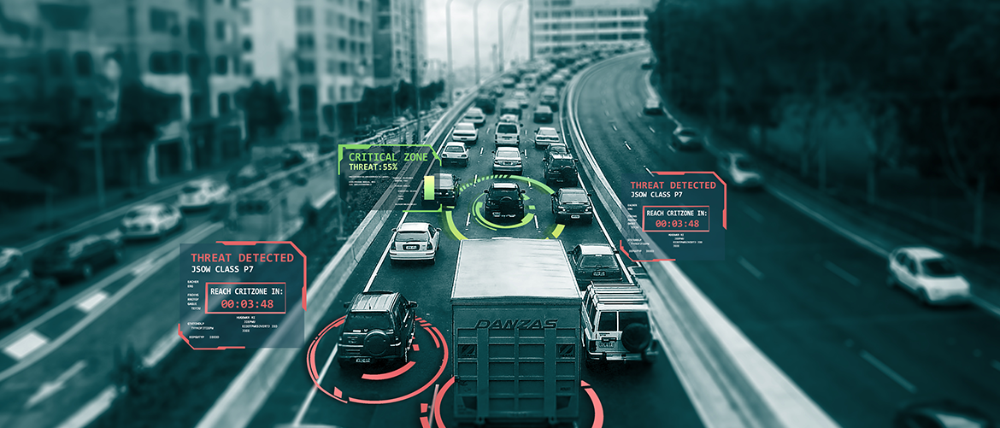

移动互联网观察
谷歌发布Android年度安全报告 机器学习做出突出贡献
新浪科技讯 北京时间3月16日凌晨消息，今天，谷歌发布了《2017年度Android安全报告》。这是该公司第四次发布此种安全报告，旨在告知用户Android移动操作系统的多种安全保护层级和该系统的不足之处。此次发布的报告中的亮点在于，60.3%的潜在恶意应用（Potentially Harmful Apps，PHAs）都是由机器学习技术检测出来的。
查看谷歌发布Android年度安全报告 机器学习做出突出贡献

新浪科技讯 北京时间3月16日凌晨消息，今天，谷歌发布了《2017年度Android安全报告》。这是该公司第四次发布此种安全报告，旨在告知用户Android移动操作系统的多种安全保护层级和该系统的不足之处。此次发布的报告中的亮点在于，60.3%的潜在恶意应用（Potentially Harmful Apps，PHAs）都是由机器学习技术检测出来的。
查看